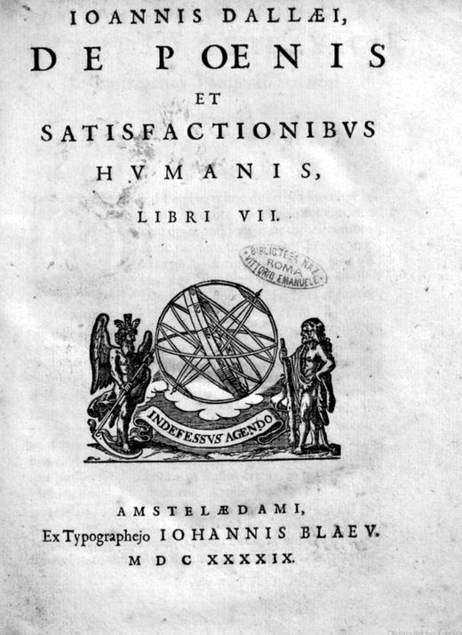
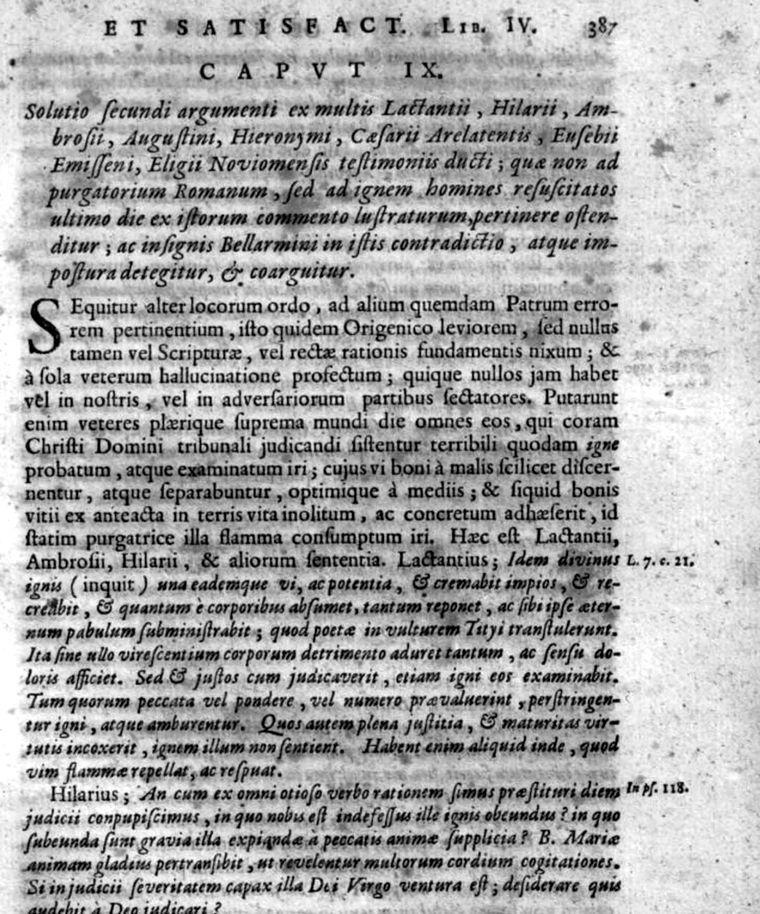

“Omnium purgatione atque restitutione”: Gregory of Nyssa (book IV, ch. 7, p. 368)

Latin: Amsterdam 1649, book IV, ch. 7, p. 368, scan. Highlighted: what Lecky reports.
Chapter VII. The objections drawn from Gregory of Nyssa are answered; and it is shown that they too belong to Origen’s delirium, with which Nyssen’s works are shown to be infected throughout, both from his own books and from the testimonies of Nilus, Germanus and Photius.
What we have said of the passages of Origen we wish to be taken as said of those brought forward from Gregory of Nyssa. For although he is of sounder faith than Origen in other respects, he plainly follows this delirium of his, the purgation and restoration of all, condemned by the whole ancient Church. And Nilus, Archbishop of Thessalonica, disputing against purgatory in the name of the Greeks, long ago noted this, in answer to the authority of Gregory as alleged by the Latins …
Original Latin
Caput VII. Respondetur ad obiecta ex Gregorio Nysseno; demonstraturque ea ad Origenis quoque delirium pertinere, quo passim infecta esse Nysseni opera ostenditur, tum ex ipsis eius libris, tum ex Nili, Germani, et Photii testimoniis.
Iam quae de Origenis locis diximus, eadem de iis dicta volumus, quae ex Gregorio Nysseno afferuntur. Is enim tametsi in caeteris fidei quam Origenes sanioris, hoc tamen eius de omnium purgatione atque restitutione delirium manifeste sequitur ab omni veteri Ecclesia damnatum. Idque Nilus Thessalonicensis Archiepiscopus Graecorum nomine contra purgatorium disputans ad obiectorum a Latinis eius auctoritatem iam pridem observavit …
The doctrine is now usually called apocatastasis. Lecky’s “in a somewhat hesitating manner” is his own qualification; Daillé allows no hesitation.
“Etiam igni eos examinabit”: the fire of the Last Judgment (book IV, ch. 9, p. 387)
Latin: Amsterdam 1649, book IV, ch. 9, p. 387, scan; Daillé’s margins cite Lactantius “L. 7. c. 21” and Hilary “In Ps. 118”. Highlighted: what Lecky summarises.

Chapter IX. The solution of the second argument, drawn from many testimonies of Lactantius, Hilary, Ambrose, Augustine, Jerome, Caesarius of Arles, Eusebius of Emesa and Eligius of Noyon; which are shown to concern not the Roman purgatory but the fire that, by their fancy, will purge men raised from the dead on the last day …
There follows a second class of passages, belonging to another error of the Fathers, lighter indeed than Origen’s, but resting on no foundations either of Scripture or of right reason … For most of the ancients thought that on the last day of the world all who are to stand before the judgment seat of Christ the Lord will be proved and examined by a certain terrible fire, by whose force the good will be distinguished and separated from the bad, and the best from the middling; and that if any fault from their former life on earth has grown into the good and stuck to them, it will at once be consumed by that purging flame. This is the opinion of Lactantius, Ambrose, Hilary and others.
Lactantius: “The same divine fire,” he says, “with one and the same force and power will both burn the wicked and refresh them … But when he judges the just too, he will also examine them with fire. Then those whose sins have prevailed, in weight or in number, will be scorched by the fire and burnt; but those whom full justice and ripeness of virtue have baked through will not feel that fire.”
Hilary: “Do we long for the day of judgment, when we must give account for every idle word, the day on which we must pass through that untiring fire, on which the heavy punishments for expiating the soul from its sins must be undergone? A sword shall pierce through the soul of blessed Mary, that the thoughts of many hearts may be revealed. If that Virgin, capable of God, is to come into the severity of judgment, who will dare to desire to be judged by God?”
Original Latin
Caput IX. Solutio secundi argumenti ex multis Lactantii, Hilarii, Ambrosii, Augustini, Hieronymi, Caesarii Arelatensis, Eusebii Emisseni, Eligii Noviomensis testimoniis ducti; quae non ad purgatorium Romanum, sed ad ignem homines resuscitatos ultimo die ex istorum commento lustraturum, pertinere ostenditur …
Sequitur alter locorum ordo, ad alium quemdam Patrum errorem pertinentium, isto quidem Origenico leviorem, sed nullis tamen vel Scripturae, vel rectae rationis fundamentis nixum … Putarunt enim veteres plaerique suprema mundi die omnes eos, qui coram Christi Domini tribunali iudicandi sistentur, terribili quodam igne probatum, atque examinatum iri; cuius vi boni a malis scilicet discernentur, atque separabuntur, optimique a mediis; et siquid bonis vitii ex anteacta in terris vita inolitum, ac concretum adhaeserit, id statim purgatrice illa flamma consumptum iri. Haec est Lactantii, Ambrosii, Hilarii, et aliorum sententia.
Lactantius: Idem divinus ignis (inquit) una eademque vi, ac potentia, et cremabit impios, et recreabit … Sed et iustos cum iudicaverit, etiam igni eos examinabit. Tum quorum peccata vel pondere, vel numero praevaluerint, perstringentur igni, atque amburentur. Quos autem plena iustitia, et maturitas virtutis incoxerit, ignem illum non sentient.
Hilarius: An cum ex omni otioso verbo rationem simus praestituri diem iudicii concupiscimus, in quo nobis est indefessus ille ignis obeundus? in quo subeunda sunt gravia illa expiandae a peccatis animae supplicia? B. Mariae animam gladius pertransibit, ut revelentur multorum cordium cogitationes. Si in iudicii severitatem capax illa Dei Virgo ventura est; desiderare quis audebit a Deo iudicari?
Lecky’s “the virtuous and orthodox were to pass unscathed, while bad people and people with erroneous theological opinions were to be burnt” follows Lactantius’s three classes as Daillé quotes them; “erroneous theological opinions” is not in these quotations. The rest of the chapter (Ambrose, Augustine, Jerome and the others) is not transcribed here.
Further down the rabbit hole
Sources that Lecky cites in the notes next to the ones that cite this page.
- Swinden, An Enquiry into the Nature and Place of HellAn Anglican clergyman proves that hell is in the sun
- Tertullian, ApologeticumWhat Lecky leaves out of Tertullian on fear
- Bodin, Démonomanie des SorciersThe great lawyer who wrote the witch-hunters’ handbook
- Minucius Felix, OctaviusThe subtle fire that burns and restores
- Michelet, La SorcièreHow many witches were burnt, and when the last: Michelet gives two answers, and Lecky takes one from each
- Agobard, Liber de imaginibusLecky’s five Agobard quotes checked against Baluze


Backlinks
Every place in Rationalism in Europe that links to this page (generated automatically when the site is built).